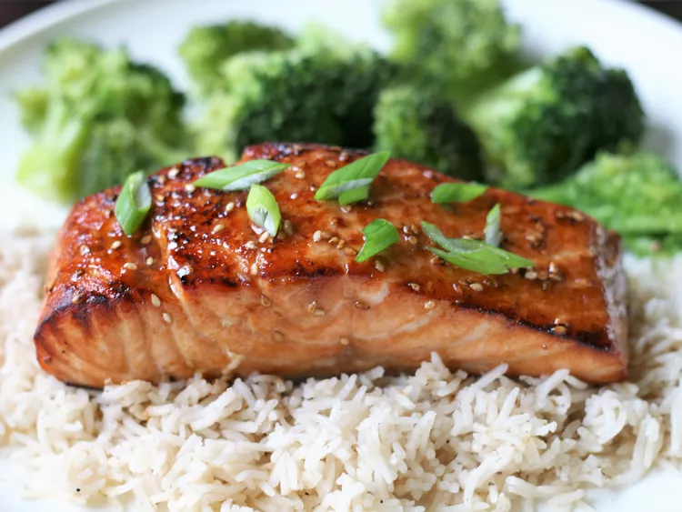

Teriyaki Salmon

Teriyaki salmon is my husband's favorite dish.
This recipe never fails to be a hit, whether we
broil the salmon in the oven or grill it outdoors.
Pair it with some homemade teriyaki fried rice to
complete your meal.
- ¼ cup sesame oil
- ¼ cup lemon juice
- ¼ cup soy sauce
- 2 tablespoons brown sugar, or more to taste
- 1 tablespoon sesame seeds
- 1 teaspoon ground mustard
- 1 teaspoon ground ginger
- ¼ teaspoon garlic powder
- 4 (6 ounce) salmon steaks
Step 1
-
Mix sesame oil, lemon juice, soy sauce, brown sugar,
sesame seeds, ground mustard, ginger, and garlic powder
in a small saucepan over low heat. Bring to a simmer,
stirring until sugar has dissolved. Set aside 1/2 cup
of marinade for basting.
Step 2
-
Pour remaining marinade into a resealable plastic bag.
Add salmon steaks, coat with marinade, squeeze out excess
air, and seal the bag. Marinate in the refrigerator for 1
to 2 hours.
Step 3
-
Set an oven rack about 6 inches from the heat source and
preheat the oven's broiler.
Step 4
-
Broil salmon steaks under the preheated broiler for 5
minutes, brushing salmon with reserved marinade. Turn and
continue to broil until salmon is opaque and flakes easily,
about 5 more minutes. Brush with marinade.